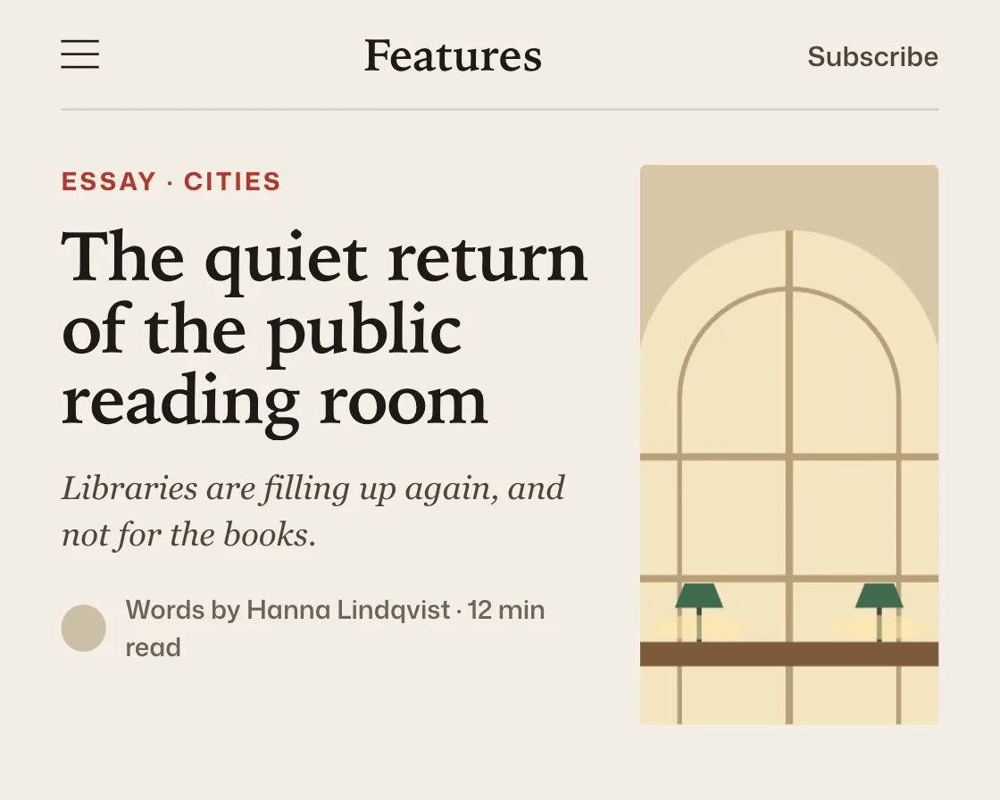

Line mask reveal
Line mask reveal is a DOM effect: lines slide up one by one from behind a clipping edge. One plain JavaScript file with no dependencies; add it with npx motion-library add line-mask.

Open it live, tune it and copy the code
What is Line mask reveal?
A three-line headline slides up line by line, then the byline follows and the photo wipes up.
How does Line mask reveal work?
Each line sits in an overflow-hidden box so its text starts below the edge; staggering by line keeps the editor’s breaks, and the exit takes half the time.
How do I add Line mask reveal to my website?
- In your project folder, run
npx motion-library add line-mask. It writesanimations/line-mask.js. Needs Node 18 or newer. - Import it and call it with a container element that has a size:
import fx from './animations/line-mask.js'; const stop = fx(document.querySelector('#hero')); - Call
stop()to clean up, for example when a component unmounts.
Every setting below is also a flag, so you can install it already tuned: npx motion-library add line-mask --stagger 250.
What settings can I tweak?
| Setting | Flag | Default | Range | Step |
|---|---|---|---|---|
| Stagger (ms) | --stagger | 90 | 0 to 250 | 5 |
| Duration (ms) | --duration | 700 | 200 to 1500 | 10 |
Specifications
- Renderer
- DOM (CSS and the Web Animations API)
- Category
- Text
- Dependencies
- None
- File size
- 8.8 KB, unminified
- Interactive
- No: it plays on its own
- Reduced motion
- Respects prefers-reduced-motion
- Licence
- MIT-0: use it anywhere, no credit needed
Source code
// Line mask reveal, on a magazine's article page: each line of the headline sits in an overflow-hidden box and slides up into view, one after another.
// Revealing line by line keeps the line breaks the editor chose, so the headline reads as typeset; the hard ease-out does most of the travel early and then lets each line settle.
const PARAMS = { stagger: 90, duration: 700 };
export default function (stage) {
const reduce = matchMedia('(prefers-reduced-motion: reduce)').matches;
const AH = 340, MINW = 400;
const art = {
room: `<rect width="170" height="230" fill="#d9c7a7"/><path d="M22 230V90a63 63 0 0 1 126 0v140z" fill="#f4e4c1"/><path d="M85 27v203M22 120h126M22 170h126" stroke="#b79f78" stroke-width="3"/><path d="M40 230V96a45 45 0 0 1 90 0v134" fill="none" stroke="#b79f78" stroke-width="2"/><rect x="0" y="196" width="170" height="10" fill="#7b5a3a"/><rect x="10" y="206" width="6" height="24" fill="#5e4329"/><rect x="154" y="206" width="6" height="24" fill="#5e4329"/><path d="M48 196v-16M122 196v-16" stroke="#3e4a3d" stroke-width="2"/><path d="M38 182h20l-4-10h-12zM112 182h20l-4-10h-12z" fill="#3e6b4d"/><ellipse cx="48" cy="190" rx="20" ry="5" fill="#ffe7a8" opacity=".55"/><ellipse cx="122" cy="190" rx="20" ry="5" fill="#ffe7a8" opacity=".55"/>`,
night: `<rect width="170" height="230" fill="#1d2433"/><circle cx="128" cy="48" r="14" fill="#f1e6c8"/><path d="M0 150h22v-46h18v-22h20v68h14V96h24v54h12v-80h22v80h16v-30h22v110H0z" fill="#2f3a52"/><path d="M28 112h4v4h-4zM46 92h4v4h-4zM104 106h4v4h-4zM124 84h4v4h-4zM124 100h4v4h-4zM150 128h4v4h-4z" fill="#f6d27a"/><path d="M0 196 C10 180 16 212 26 196 S40 170 50 196 S62 214 72 196 S84 160 96 196 S108 220 118 196 S132 176 142 196 S156 212 170 196" fill="none" stroke="#f6d27a" stroke-width="2.4"/>`,
river: `<rect width="170" height="230" fill="#cfdccb"/><path d="M0 0h170v60C120 70 70 50 0 66z" fill="#a9c2a3"/><path d="M60 0c10 40 70 50 60 100s-90 40-70 90 50 30 40 40h44c-14-12-48-20-52-44-6-30 78-40 78-96S118 30 108 0z" fill="#5f8fa8"/><path d="M78 0c8 32 56 44 48 92" fill="none" stroke="#9cc3d6" stroke-width="2.4"/><circle cx="34" cy="120" r="10" fill="#7a9f6c"/><circle cx="24" cy="134" r="8" fill="#6a8f5c"/><circle cx="146" cy="168" r="11" fill="#7a9f6c"/><path d="M96 150l8-3-2 7z" fill="#e88a6a"/>`,
};
const stories = [
{ kicker: 'Essay · Cities', lines: ['The quiet return', 'of the public', 'reading room'], dek: 'Libraries are filling up again, and not for the books.', by: 'Words by Hanna Lindqvist · 12 min read', art: 'room' },
{ kicker: 'Science · Sound', lines: ['What a city', 'sounds like', 'at four a.m.'], dek: 'We left microphones on six rooftops for a month.', by: 'Words by Tomás Ferreira · 9 min read', art: 'night' },
{ kicker: 'Nature · Rivers', lines: ['How a river', 'learned to', 'run wild again'], dek: 'Two dams came down. The salmon were back within a year.', by: 'Words by Amira Haddad · 14 min read', art: 'river' },
];
const root = document.createElement('div');
root.className = 'lm-root';
root.innerHTML = `<style>
.lm-root { position: absolute; inset: 0; overflow: hidden; background: #f3eee4; color: #1d1b18; font-family: "Mona Sans", system-ui, -apple-system, sans-serif; }
.lm-art { position: absolute; left: 0; top: 0; height: ${AH}px; transform-origin: 0 0; }
.lm-top { position: absolute; left: 26px; right: 26px; top: 0; height: 46px; display: flex; align-items: center; justify-content: space-between; border-bottom: 1px solid #d8d0c1; font-size: 11.5px; font-weight: 560; color: #4b463e; }
.lm-top .lm-sec { font: 700 19px/1 ui-serif, "Iowan Old Style", Georgia, serif; color: #1d1b18; letter-spacing: -0.01em; }
.lm-burger { width: 16px; height: 10px; border-block: 1.6px solid #1d1b18; position: relative; }
.lm-burger::after { content: ""; position: absolute; left: 0; right: 0; top: 50%; border-top: 1.6px solid #1d1b18; transform: translateY(-50%); }
.lm-body { position: absolute; left: 26px; right: 26px; top: 70px; display: flex; gap: 22px; }
.lm-text { flex: 1; min-width: 0; }
.lm-kicker { font-size: 10.5px; font-weight: 700; letter-spacing: .12em; text-transform: uppercase; color: #b4372c; }
.lm-head { margin: 10px 0 12px; }
.lm-mask { overflow: hidden; padding-bottom: .08em; margin-bottom: -.08em; }
.lm-mask span { display: block; font: 600 40px/1.04 ui-serif, "Iowan Old Style", Georgia, serif; letter-spacing: -0.02em; white-space: nowrap; transform: translateY(125%); will-change: transform; }
.lm-dek { font: italic 400 14px/1.4 ui-serif, Georgia, serif; color: #4b463e; }
.lm-by { margin-top: 14px; display: flex; align-items: center; gap: 8px; font-size: 11px; font-weight: 560; color: #6b6458; }
.lm-by i { width: 20px; height: 20px; border-radius: 50%; background: #cbbfa8; }
.lm-fig { flex: none; width: 34%; max-width: 190px; height: 238px; border-radius: 3px; overflow: hidden; clip-path: inset(0 0 100% 0); }
.lm-fig svg { width: 100%; height: 100%; display: block; }
</style>
<div class="lm-art">
<div class="lm-top"><span class="lm-burger"></span><span class="lm-sec">Features</span><span>Subscribe</span></div>
<div class="lm-body">
<div class="lm-text"><div class="lm-kicker"></div><div class="lm-head">${'<div class="lm-mask"><span></span></div>'.repeat(3)}</div><div class="lm-dek"></div><div class="lm-by"><i></i><span></span></div></div>
<div class="lm-fig"></div>
</div>
</div>`;
stage.append(root);
const box = root.querySelector('.lm-art'), kicker = root.querySelector('.lm-kicker'), dek = root.querySelector('.lm-dek');
const by = root.querySelector('.lm-by'), fig = root.querySelector('.lm-fig'), spans = [...root.querySelectorAll('.lm-mask span')];
const fit = () => {
const W = stage.clientWidth, H = stage.clientHeight, s = Math.min(H / AH, W / MINW) || 1;
box.style.width = W / s + 'px'; box.style.top = (H - AH * s) / 2 + 'px'; box.style.transform = `scale(${s})`;
// the headline never wraps on its own: if a line is too long for the column, the whole headline steps down a size
spans.forEach(sp => { sp.style.fontSize = ''; });
const col = root.querySelector('.lm-text').clientWidth, widest = Math.max(...spans.map(sp => sp.scrollWidth));
const fs = parseFloat(getComputedStyle(spans[0]).fontSize);
if (widest > col) spans.forEach(sp => { sp.style.fontSize = Math.max(26, fs * col / widest) + 'px'; });
};
const ro = new ResizeObserver(fit); ro.observe(stage);
const easeOut = 'cubic-bezier(0.23, 1, 0.32, 1)';
let k = 0, timers = [];
const later = (fn, ms) => timers.push(setTimeout(fn, ms));
const quiet = [kicker, dek, by];
function cycle() {
const s = stories[k];
root.getAnimations({ subtree: true }).forEach(a => a.cancel());
kicker.textContent = s.kicker; dek.textContent = s.dek; by.lastChild.textContent = s.by;
spans.forEach((sp, i) => { sp.textContent = s.lines[i]; });
fig.innerHTML = `<svg viewBox="0 0 170 230" preserveAspectRatio="xMidYMid slice" aria-hidden="true">${art[s.art]}</svg>`;
fit();
const D = PARAMS.duration, S = PARAMS.stagger, opt = { easing: easeOut, fill: 'both' };
spans.forEach((sp, i) => sp.animate(reduce ? [{ opacity: 0, transform: 'none' }, { opacity: 1, transform: 'none' }] : [{ transform: 'translateY(125%)' }, { transform: 'translateY(0)' }], { ...opt, duration: D, delay: 80 + i * S }));
// supporting copy follows the headline, and the photo wipes up from the bottom of its frame
quiet.forEach((el, i) => el.animate([{ opacity: 0, transform: reduce ? 'none' : 'translateY(6px)' }, { opacity: 1, transform: 'none' }], { ...opt, duration: 400, delay: (i === 0 ? 0 : 80 + D * 0.5 + 3 * S) + i * 60 }));
fig.animate(reduce ? [{ clipPath: 'inset(0 0 0% 0)', opacity: 0 }, { clipPath: 'inset(0 0 0% 0)', opacity: 1 }] : [{ clipPath: 'inset(0 0 100% 0)' }, { clipPath: 'inset(0 0 0% 0)' }], { ...opt, duration: D * 1.3, delay: 140 });
fig.firstChild.animate([{ transform: 'scale(1.12)' }, { transform: 'scale(1)' }], { ...opt, duration: reduce ? 0 : D * 2 });
const shown = 80 + D + 3 * S + 2400;
later(() => {
// leaving is quicker than arriving, and the lines go up and out the way they came in
spans.forEach((sp, i) => sp.animate(reduce ? [{ opacity: 1, transform: 'none' }, { opacity: 0, transform: 'none' }] : [{ transform: 'translateY(0)' }, { transform: 'translateY(-130%)' }], { ...opt, duration: D * 0.5, delay: i * S * 0.5 }));
quiet.forEach(el => el.animate([{ opacity: 1 }, { opacity: 0 }], { ...opt, duration: 220 }));
fig.animate([{ clipPath: 'inset(0 0 0% 0)' }, { clipPath: 'inset(0 0 0 0)', opacity: 0 }], { ...opt, duration: 260 });
}, shown);
later(() => { k = (k + 1) % stories.length; cycle(); }, shown + D * 0.5 + 3 * S * 0.5 + 260);
}
cycle();
return () => { timers.forEach(clearTimeout); ro.disconnect(); root.getAnimations({ subtree: true }).forEach(a => a.cancel()); root.remove(); };
}